Blueprint funcional de 12 pantallas para dos perfiles de usuario: el Personal del Inmueble (herramienta de supervivencia y reducción de pánico) y el Brigadista / Seguridad (herramienta de operación, triage y control local), conectado directamente con la consola web del SOC.
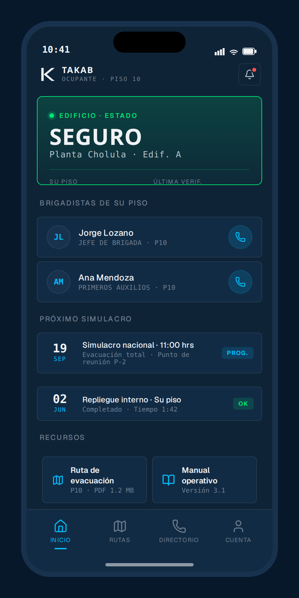
Vista por defecto cuando no hay alerta activa.
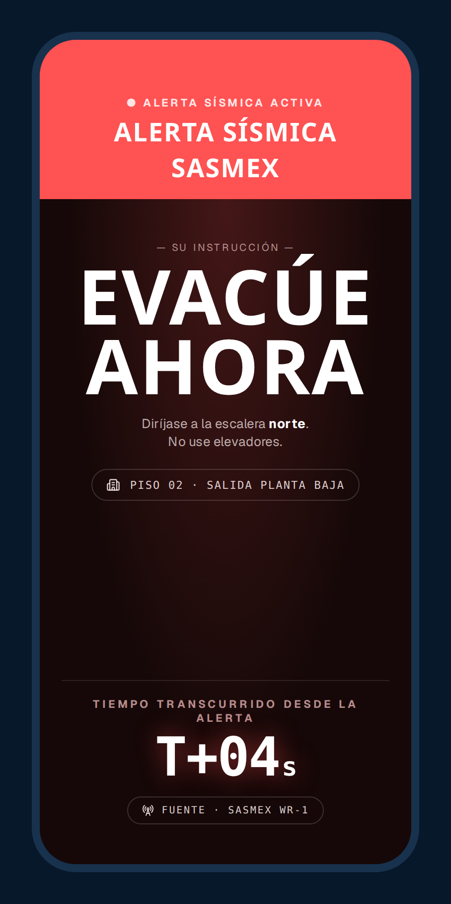
Pantalla roja de toma total, disparada por Critical Alert (iOS) / Canal de Alta Prioridad (Android) — se salta "No Molestar" y el silencio del teléfono, y emite el sonido oficial de alerta sísmica.
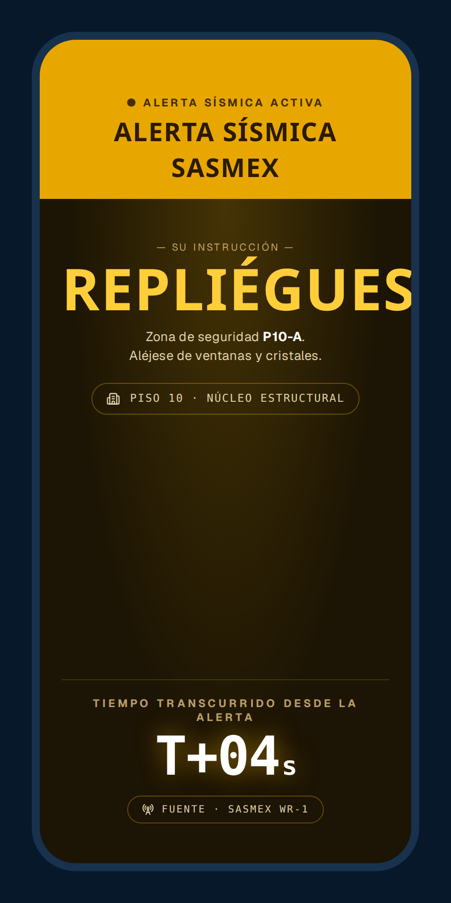
Misma estructura binaria que 1.2, variante ámbar: pisos altos (ej. piso 10) reciben la instrucción de repliegue a zona de seguridad interior en vez de evacuar, dado el tiempo insuficiente para bajar por escaleras.
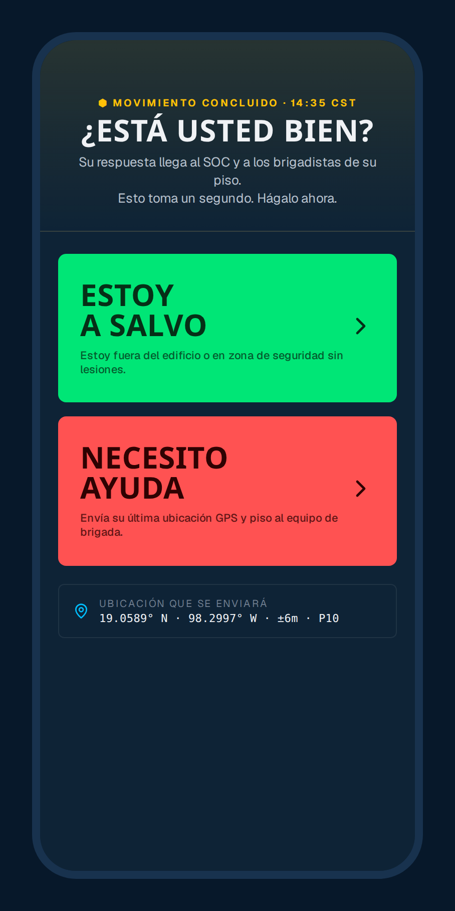
Tras concluir el movimiento, la pantalla cambia automáticamente a un botón de estado binario — la única acción disponible.
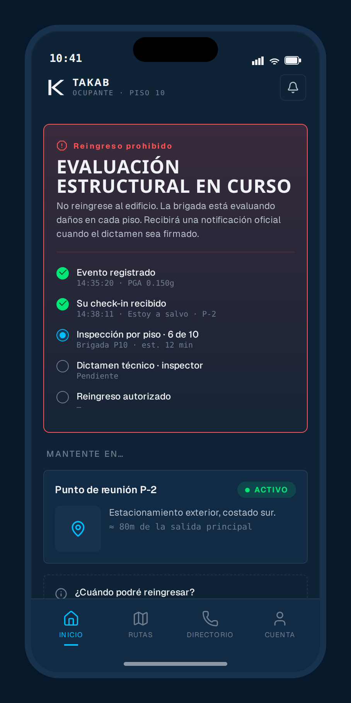
Letrero rojo persistente: "Reingreso Prohibido · Evaluación Estructural en curso", con línea de tiempo del proceso de inspección.
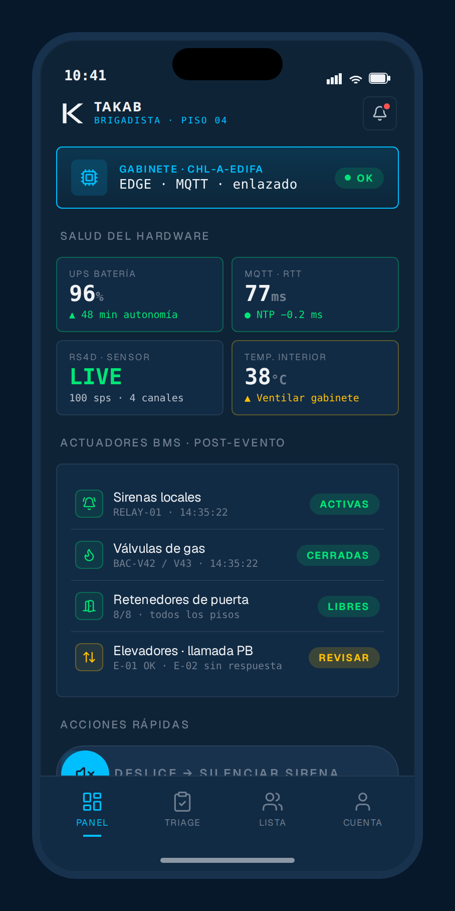
Pantalla principal del brigadista: salud del gabinete TAKAB en tiempo real y checklist de actuadores automáticos.
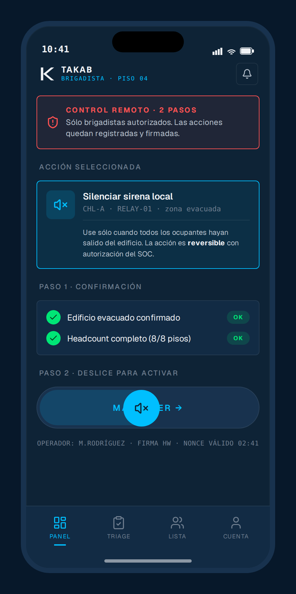
Acciones críticas (silenciar sirena, disparo manual) requieren confirmación explícita y "deslizar para activar" — nunca un toque accidental.
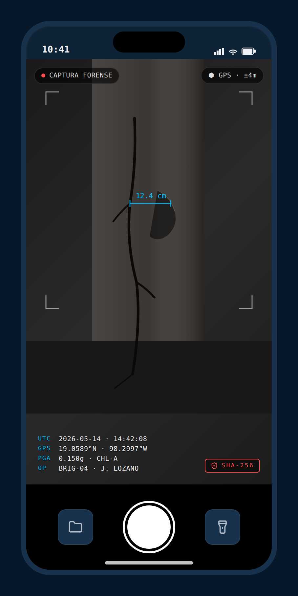
Captura fotográfica de grietas, daños en columnas o fugas con marca de agua inalterable horneada al pixel.
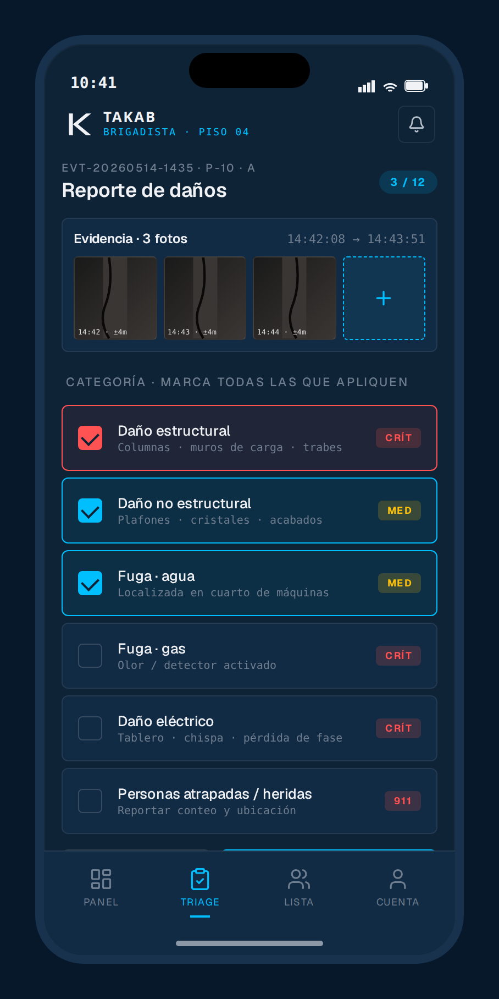
Categorías marcables ligadas a la evidencia fotográfica y GPS de la pantalla anterior.
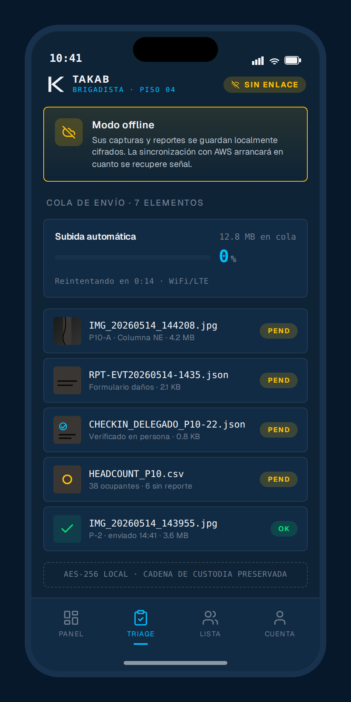
Si el WiFi o los datos celulares están caídos, la app guarda fotos y reportes localmente y los dispara automáticamente a AWS en cuanto el teléfono recupera señal.
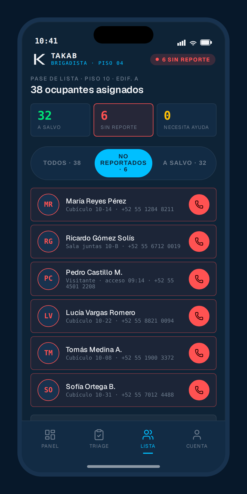
Cruza los "check-ins de vida" del personal del inmueble con el roster asignado a cada brigadista.
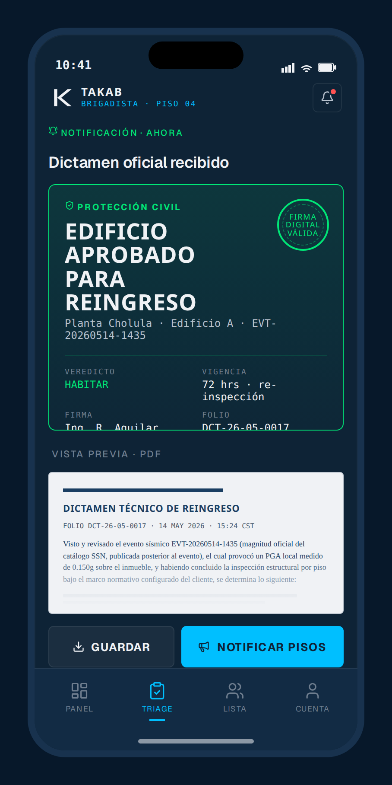
Cuando el SOC principal (Protección Civil / ingeniero a cargo) firma el dictamen electrónico en la consola web, el brigadista recibe el certificado digital (PDF) con la orden oficial "Edificio Aprobado para Reingreso".